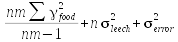
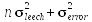
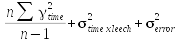
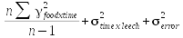
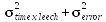
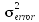

Medicinal leeches are aquatic annelids that feed on warm-blooded prey, by attaching with their front suckers, abrading the skin with a rasp-like jaw, and drinking the blood as it seeps from the skin. Leeches are capable of consuming a huge amount of blood in a single feeding, several times their own body weights. After a feeding leeches rapidly expel the liquid portion of the blood, and then more slowly digest the solid components of their meal. As ectothermic animals, their metabolic rates are quite low, and a single blood meal can last them for months.
Leeches can also be fooled into eating arginine solution, but arginine has little nutritive value for leeches. We will see whether leeches fed on arginine show a different pattern of weight change over time compared to leeches fed on blood.
Multiple measurements from the same leech are probably not independent - a big leech is going to have consistently big masses compared with a small leech. We could handle this level of dependency by using the individual leech as a random effect.
We also would expect to have some serial dependency, which means that measurements of the same leech between successive days will be correlated, particularly if the leech is gaining or losing weight over time. We can account for this serial dependency using repeated measures ANOVA.
Repeated measures analysis treats time as an ordinal categorical variable, so our analysis will be very much like a 2-way factorial ANOVA. Thus, we can ask questions about:- Whether there are differences in masses between arginine and blood-fed leeches - this is the between-subjects main effect.
- Whether masses changed over time - this is the within-subjects main effect.
- Whether the pattern of change over time differed between arginine and blood-fed leeches - this is the interaction of between- and within-subjects effects.
There are two different approaches to repeated measures analysis - the univariate approach, and the multivariate approach. If your data meet the assumptions of univariate RMA it is more statistically powerful than the multivariate approach. However, to use the univariate approach we need to assume sphericity, which means that the variance has to be the same between successive time points. If we violate sphericity, but not too badly, we can adjust for the lack of sphericity within a univariate ANOVA. However, if we violate sphericity badly we would need to use the multivariate approach, which does not assume sphericity at all.
We will focus on understanding the univariate approach today. We will use a data set that's derived from a real experiment, but has been altered by your instructor to meet the sphericity assumption.
Importing the data and graphing the means
1. Start a new project (in a folder called "repeated"), start a new R script, and import today's data. Download this file and import the two worksheets - the first one (leech) has the data in the arrangement we need for running a repeated measures ANOVA, but the other (leeches_stacked) is better for graphing. Call the first data set leech, and the second leech.stacked.
2. Make a plot of means. Make a plot of mean weights, with "food" and "day" as the factors, and "weight" as the response. First, load ggplot2:
library(ggplot2)
Make the summarized data set you need for plotting:
leech.summ <- summarySE(leech.stacked, measurevar = "weight", groups = c("day","food"))
Next, set the global settings with:
leech.gg <- ggplot(leech.summ, aes(x = day, y = mean, color = food, group = food, ymin = mean - se, ymax = mean + se))
Then add points, error bars, and lines to the plot:
leech.gg + geom_point() + geom_line() + geom_errorbar(width = 0.1) + labs(y = "Weight")
The final labs() statement changes the y-axis label from "mean" to "Weight".
As expected, the leeches increase their body weight by a factor of 7-10 when they feed, but you should also see that the blood-fed leeches only lose weight rapidly on the first day or two as they expel liquid from the blood, and then lose weight much more slowly after that as they slowly digest the solid components. The arginine-fed leeches appear to gain less weight, and to lose weight rapidly for several days in a row. Since the patterns are quite different you should expect a food x day interaction.
Repeated measures analysis
There are actually several different ways to run a univariate repeated measures analysis in R (that I know of, there may be more). They are:
-
Using aov() with an Error() statement.
-
Using Anova() from the car package.
-
Using ezANOVA() from the ez package.
- Using linear mixed effects models, from either the lme or lme4 packages.
We will use the Anova() function from the car package, because it is flexible and comprehensive. Anova() gives us a test of sphericity, and provides univariate analysis with and without corrections for violation of sphericity, as well as multivariate tests if they are needed.
The three that we aren't going to learn about today are also interesting - the ez package is designed as a set of "wrappers" that use existing R commands to do the actual work, but make the input from the user simpler and more intuitive (remember that script I gave you to test the effects of light at each of two water levels when you did the interaction exercise? That was a wrapper function). The linear mixed effects packages (lme and lme4) are the preferred platforms for fitting complex mixed-effects models in R. The reason we won't be using them is that they use a different syntax in their model statements, organize the output in an unfamiliar way, and generally are a much bigger departure from what you've already learned.
There are several steps we need to take to use the Anova() function for repeated measures analysis.
1. Prepare the data for analysis with Anova(). To use Anova() we need to provide it with several things:
-
An object that defines the within-subjects design - it's possible to have treatment levels that we need to account for in the within-subjects part of the design. We could, for example, have kept the leeches in cold water for the first four days, and then increased the temperature for the last three, in which case temperature would be an additional within-subjects factor. In this case, since we have only one within-subjects variable (day) we have a very simple within-subjects design - all we need to do is list the time points. We will call this object "time.factor".
-
A "data frame" that gives names for the different repeated time points (which we will call "time.frame").
-
A fitted lm() model that includes the between-subjects effect for each of the time points (which we will call "time.model"). This is actually a multivariate linear model, with all of the time points treated as a response, but Anova() will use the analysis to construct a univariate RMA from it.
To set up the object that defines the different levels of the repeated
factor, use:
time.factor <- ordered(seq(1,7))
This command generates a sequence of numbers from 1 to 7 and then makes
an ordinal factor out of them (remember, in R "factor" is the name of a
categorical variable made up of levels - making this an ordered factor
will give us the ability to test for trends over time). We have seven
days of measurements, and Anova() will use this object to label them.
You won't see any output to the screen because the factor was assigned
to time.factor, but if you type the name of the object its contents will
be displayed:
[1] 1 2 3 4 5 6 7
Levels: 1 < 2 < 3 < 4 < 5 < 6 < 7
The levels are the category names, and R uses less than symbols to
indicate the ordering. To make a data frame that gives names for the
repeated time points use:
time.frame <- data.frame(time.factor)
Time.frame has only the time.factor in it, but it is now a column in a
data frame. The time.frame object is defining the within-subjects
design, and since we only have a single within-subjects factor (time),
we just need one column with the time points identified.
Finally, to set up the model to be analyzed, use the commands:
time.bind <- as.matrix(leech[,3:9])
This command extracts the masses in columns 3 through 9 and assigns
them to a matrix called time.bind. To fit the model, use the command:
time.model <- lm(time.bind ~ leech$food)
This last command makes a multivariate linear model for the
between-subjects factor (food), that also includes all of the basic
quantities Anova() needs to do univariate repeated measures ANOVA.
3. Run the analysis. First, make sure the "car" library is loaded - it has the Anova() function we need:
library(car)
Generate the analysis with the commands:
leech.rma <- Anova(time.model, idata = time.frame, idesign = ~time.factor)
summary(leech.rma)
The first command, Anova(), produces the analysis and places the output into object leech.rma, and the second, summary(), dumps the output to the screen so you can see it.
The Anova() command produces a lot of output, because both multivariate and univariate tests are produced. We are only interested in the univariate results for this class, so scroll down to the bottom and then back up until you see "Univariate Type II Repeated-Measures ANOVA Assuming Sphericity". It looks like this:
Univariate Type II Repeated-Measures ANOVA Assuming
Sphericity
SS num Df Error SS den
Df F
Pr(>F)
(Intercept)
5511.3 1
28.148 18 3524.3943 < 2.2e-16
leech.s$food
522.6 1
28.148 18 334.1721 4.520e-13
time.factor
401.3 6 210.318
108 34.3486 < 2.2e-16
leech.s$food:time.factor
71.4 6 210.318
108 6.1074 1.549e-05
Each term tested (main effect of food, main effect of time, interaction between food and time) gets a row in the table, and the sums of squares and degrees of freedom used to generate a term's F value is all in the same row. This is different than we are used to - the ANOVA tables we have been working with had a different row for variation explained by a term, and put the error term in another row at the end of the table. In this repeated measures ANOVA table, the term's explained SS appears first, followed by the term's (numerator) df, followed by the error SS used to test the term, and the error (denominator) df. From these an F ratio and p-value are calculated.
The main effect of food is tested relative to random variation among mean masses of the individual leeches. Because of this, you'll see the denominator Df is 18 for the test of leech$food, which is the number of leeches - 2. The main effect of time and the time by food interaction are both assessed using the repeated measurements, so the error term used to test time and time by food interaction is random variation at the level of individual measurements - the degrees of freedom of 108 appearing is based on the number of measurements, rather than the number of leeches.
Below this ANOVA table is Mauchly's test of sphericity - it looks like this:
Mauchly Tests for Sphericity
Test statistic p-value
time.factor
0.30535 0.5497
leech.s$food:time.factor
0.30535 0.5497
If p < 0.05 we violate the sphericity assumption, but you can see here we meet the assumption.
If we did violate sphericity, we would move on to the next block of output:
Greenhouse-Geisser and Huynh-Feldt Corrections
for Departure from Sphericity
GG eps Pr(>F[GG])
time.factor
0.74333 < 2.2e-16 ***
leech.s$food:time.factor 0.74333 0.0001408 ***
---
Signif. codes: 0 '***' 0.001 '**' 0.01 '*' 0.05 '.' 0.1 ' ' 1
HF eps Pr(>F[HF])
time.factor
1.018454 6.218027e-23
leech.s$food:time.factor 1.018454 1.548739e-05
The epsilon statistic measures the degree of sphericity in the data, with an epsilon of 1 indicating perfect sphericity. If we fail the sphericity test but epsilon is still greater than 0.7, we can use p-values that adjust for the lack of sphericity. There are two different approaches to measuring epsilon and adjusting the p-value, developed by Greenhouse and Geisser or by Huynh and Feldt, and the epsilons and adjusted p-values for both are presented. We don't need these now, since we meet the sphericity assumption, but you might need them later (on an exam, in life).
If we violated sphericity and our epsilon value was too small (< 0.7) to use the GG or HF corrections, we should use the multivariate tests instead. If you search through the mass of output, you'll find a table for each term in the model that looks like this (they aren't all together, but I've gathered them together to make it easier for you to see them):
Multivariate Tests: (Intercept)Df test stat approx F num Df den Df Pr(>F)
Pillai 1 0.99492 3524.394 1 18 < 2.22e-16 ***
Wilks 1 0.00508 3524.394 1 18 < 2.22e-16 ***
Hotelling-Lawley 1 195.79968 3524.394 1 18 < 2.22e-16 ***
Roy 1 195.79968 3524.394 1 18 < 2.22e-16 ***
Multivariate Tests: leech$food
Df test stat approx F num Df den Df Pr(>F)
Pillai 1 0.948889 334.1721 1 18 4.5203e-13 ***
Wilks 1 0.051111 334.1721 1 18 4.5203e-13 ***
Hotelling-Lawley 1 18.565115 334.1721 1 18 4.5203e-13 ***
Roy 1 18.565115 334.1721 1 18 4.5203e-13 ***
Multivariate Tests: time.factor
Df test stat approx F num Df den Df Pr(>F)
Pillai 1 0.955719 46.76306 6 13 4.6762e-08 ***
Wilks 1 0.044281 46.76306 6 13 4.6762e-08 ***
Hotelling-Lawley 1 21.582952 46.76306 6 13 4.6762e-08 ***
Roy 1 21.582952 46.76306 6 13 4.6762e-08 ***
Multivariate Tests: leech$food:time.factor
Df test stat approx F num Df den Df Pr(>F)
Pillai 1 0.826102 10.29275 6 13 0.00026529 ***
Wilks 1 0.173898 10.29275 6 13 0.00026529 ***
Hotelling-Lawley 1 4.750500 10.29275 6 13 0.00026529 ***
Roy 1 4.750500 10.29275 6 13 0.00026529 ***
Each row is a different multivariate test statistic which all test the same question in a different way, and you would only need to present one for each term. You can see they all have identical p-values to eight decimal places, so the choice isn't critical in this case - Wilks is most commonly reported.
To sum up, the procedure is:
- If you meet the sphericity assumption according to Mauchly's test, use the un-adjusted p-values from the univariate ANOVA table.
- If you violate the sphericity assumption, look at the epsilon value to see how badly you violate it.
- With an epsilon above 0.7, use the GG or HF adjusted p-values for the within-subjects main effect and the between x within interaction.
- If epsilon is less than 0.7, use the multivariate tests. Wilks is commonly reported, so as long as all the multivariate tests agree, use Wilks.
Post-hoc analysis of an RMA
Post-hoc comparisons in a repeated measures ANOVA can take several different forms, depending on what we want to know about the results. If there is no interaction, we can do the following:
-
Between-subjects main effect - Tukey comparisons among treatment groups (if needed - with only two groups a significant main effect is all we need in our case).
-
Within-subjects main effect - post-hoc comparisons among time points of interest. Since the data are repeated measurements over time, paired comparisons should be used. We have 7 time points, which would give us 21 pairs of means to compare if we used all that were possible. This can be reduced if you are only interested in comparing one time point against all the others - for example, you may want to compare each time point against initial conditions, or against the final measurement to see when a difference arises, or when differences disappear, respectively. You may also be interested in differences between successive time points - day 1 to day 2, day 2 to day 3, etc.
But, we have an interaction, telling us that the pattern of change over time depends on the treatment. We still would like to avoid comparing all possible pairs of means, because with 7 time points and 2 food groups there are 91 possible pairs of food types and time points to compare. A more restricted, targeted set of comparisons is needed.
The choice of which comparisons to make depends largely on your research question, but there are a couple of common approaches:
Tests of trend over time: rather than testing for differences between means, you may be happy to just know what the nature of the change over time is.
This unfortunately is not perfectly straightforward - car library includes a function called linearHypothesis() that lets us test for different time trends (linear, quadratic, cubic, etc).
We will just test the trends for the main effect of time. First, we need to create the "model matrix" that has the orthogonal polynomial weights (remember, these take the place of dummy codes for ordered factors, and model the different time levels as a linear trend + a quadratic trend + a cubic trend...up to one less than the number of factor levels). Do that with the command:
model.matrix(~time.factor) -> time.model.matrix
If you type the name of the object, time.model.matrix, you'll see a matrix with a column for an intercept, and then columns with coefficients for each type of trend - rows are the seven days.
To test the linear trend in the data, we would use the command:
linearHypothesis(time.model, "(Intercept) = 0", P=time.model.matrix[ , 2, drop=FALSE])
This command uses the time.model object we already created for Anova() - time.model is the within-subjects design of the analysis. Our polynomial weights are centered on 0, so testing if the intercept is equal to 0 is equivalent to testing the trend. The argument P=time.model.matrix[ , 2, drop=FALSE] tells linearHypothesis() to use the second column in our time.model.matrix in the hypothesis test. The second column is where the linear weights are, so this will test for linear trend. To test for quadratic trend, you can just recall the command (with the up arrow key), and change the 2 to a 3 in time.model.matrix[ , 3, drop = FALSE].Comparisons between groups at each time point: If finding the time points at which the treatments differ is important we can compare the food treatments at each day. Since no comparisons are made between days we will only have 7 comparisons to do.
R actually makes this pretty easy - we can use the aov() command to conduct an ANOVA for all 7 of the daily mass measurements with a single command. Comparison of foods within a time point is a comparison between two independent groups, so paired comparisons aren't needed, and with only two food levels we can use the p-value on an ANOVA to tell if the treatments are different. Use the command:
summary(aov(time.bind~food, data=leech))
This assumes you used time.bind for your Anova() of the actual data;
if not, change time.bind to be the name you used for the set of masses
in the real data set. You will get a separate ANOVA table for each set
of masses in time.bind. Bear in mind that with 7 tests you should not
consider anything greater than 0.05/7 = 0.0071 to be significant.
Comparison between time points within each group: Finally, we might want to know which time points are different within a food type.
We may only be interested in comparing sequential differences (that is, differences between d1 to d2, d2 to d3, d3 to d4, etc.) for blood-fed animals, and the same sequence for arginine-fed animals. Alternatively, we may be interested in the time points that are different than starting conditions - each of the time points compared to d1. In either case we need these comparisons to be paired t-tests instead of ANOVA's or two-sample t-tests because we're comparing two sets of measurements on the same individuals on different days.
R provides a function called pairwise.t.test() that can make the comparisons we want, using paired t-tests. It has one big drawback, though, in that it only presents "naked" p-values - meaning, p-values without test statistics and degrees of freedom, which is not usually enough to satisfy editors of journals. We will use a process that will give us what we want, but it will take a couple of steps.
1. Calculate the differences between sequential time points. The data are in an object called leech, with the leech at each day in columns 3 through 9. We can calculate differences between successive time points with:
leech[,3:8] - leech[,4:9] -> time.diffs
Since the column references are all different by 1, this command will subtract column 4 from 3, column 5 from 4, and so on. We can make these differences a data frame, with the command:
data.frame(time.diffs) -> time.diffs
If you look at time.diffs (by typing time.diffs at the command prompt) you'll see that the labels are carried over from the first set of columns - they are the labels for the first through the 6th day, rather than labels that indicate the difference. We can fix this by assigning labels that indicate the two days being compared:
colnames(time.diffs) <- paste(colnames(leech[,3:8]), colnames(leech[,4:9]), sep = ".")
The paste() command combines arguments together, using the separator identified with sep =. We are using the column names for columns 3 to 8, and combining them in pairs with the column names in 4 to 9, using a period as the separator. This will help us keep track of what is being compared as we assemble our results.
2. Split the data by food type. We want to split the data in two by food group, which we can do with:
split(time.diffs, leech$food) -> diffs.split
The split() command takes a data frame we want to split, and a factor that has the groups we want to split by, and makes a list with data sets for each of the groups. A list is another R data type, which has named elements that can hold another data type (a data frame, or a matrix, for example). If you type the name:
diffs.split
you will see you have two named sections, one for $blood, and one for $arg, with the differences for each. You can extract a named element by name using the syntax:
diffs.split$arg
to get the arginine differences as a group. To pull out just the differences for d1.d2, you would change this to:
diffs.split$arg$d1.d2
3. Conduct the paired t-tests. Now that we have a list with our two data sets, we can get our t-tests done using a single command that applies a function to each named element of a list. Use the command:
lapply(diffs.split, function(i) apply(i, MARGIN = 2, FUN = t.test)) -> diffs.ttests
This is actually two different versions of the apply function nested inside of one another.
- The outer function is lapply(), and this is used to extract the data from each named element of diffs.split one at a time and apply a function to them. The first argument is the name of the list (diffs.split). From this list, lapply() extracts the first named element ($arg) passes it to the function specified as the second argument. The function is specified as function(i) apply(). At this point, control is passed to the apply() function.
- apply() is used to apply a function (identified by FUN =) to either the rows (if MARGIN = 1) or columns (if MARGIN = 2) of a data frame or a matrix. Our differences between days are in columns, so we're using MARGIN = 2. The first time through the apply() function will pass the differences in diffs.split$arg$d1.d2 to the function specified by FUN.
- The FUN = t.test statement causes the function t.test(diffs.split$arg$d1.d2) to be run. Running t.test() on a single set of data without any other arguments gives us a one-sample t-test of the mean of d1.d2 against 0. A one-sample comparison of differences against a hypothetical mean difference of 0 is a paired t-test, so this will give us paired t-tests of the differences between successive days.
- apply() then moves to the next column, d2.d3, and performs a t-test on it. This continues until all of the columns in diffs.split$arg are processed, at which time apply() passes control back to the lapply() function.
- lapply() moves to the second named element, $blood, and passes it back to apply(). When apply() completes the t-tests for all the columns of differences in $blood, and the complete set of t-test results are returned and put into diffs.ttests.
4. Report the results. If you look at the output by typing:
diffs.ttests
you'll see that diffs.ttests is a list of t-tests, each labeled by the food type first, and then by the day. For example, the label $arg$d1.d2 is labeled first by the food type, and then by the days being compared. The labeling is hierarchical - meaning, if we used the command:
diffs.ttests$arg
we get all of the t-tests done on the arginine-fed leeches, with labels giving only the days compared.
It's a long list, but if you were patient and careful you could record each p-value, test statistic, and degrees of freedom for all of the tests.
Fortunately, there is a better way.
First, you should understand that the output of a t-test is also an R object made up of several named elements. We can see what they are for the arginine d1.d2 t-test by typing:
names(diffs.ttests$arg$d1.d2)
You'll see the following:
[1] "statistic" "parameter"
"p.value" "conf.int"
"estimate"
[6] "null.value" "alternative"
"method" "data.name"
We don't need all of these values, we only need the test statistic, degrees of freedom, and p-value, which are the named elements "statistic", "parameter", and "p.value". To extract p-values from the list of tests, we would use:
sapply(diffs.ttests, function(i) sapply(i,
function(y) y$p.value)) -> pvals
The sapply() function is just like lapply(), but it returns a matrix instead of a list. This command is actually two sapply() functions nested inside one another, and it works like this:
- The outer sapply() uses diffs.ttests as its first argument, and extracts all of $arg results first to pass to the function defined in its second argument. The function(i) statement says that the data passed on to the function is going to be called i within the function definition. The function that is defined is another sapply(), and this second sapply() uses i as its first argument, which will be the $arg t-tests for the first time through. The $arg t-tests are thus passed to the inner sapply() function.
- The inner sapply() takes the data passed to it in i, and then applies a function to the first named section within i, which will be d1.d2. The named sections used for the inner sapply() are called y.
- The function defined in the inner sapply() simply extracts the p-value from the t-test result it is passed as y. The first time through the inner sapply, y will thus be the t-test for d1.d2.
- The inner sapply() moves on to the next t-test result (d2.d3), and extracts its p-value. This continues until all the t-tests in $arg have been processed.
- When all the t-tests in $arg have been processed, the inner sapply(), passes control back to the outer sapply().
- The outer sapply() moves on to the second named element, $blood, and repeats the process with the $blood t-tests.
- Once the $blood p-values have been extracted, the outer sapply() returns the p-values for both $arg and $blood. These are assigned to an object called pvals.
If you type pvals at the command line, you'll see a matrix of p-values, with row labels indicating the days being compared, and column labels indicating the food type.
sapply(diffs.ttests, function(i) sapply(i,
function(y) y$statistic)) -> tstats
And, the degrees of freedom can be obtained with:
sapply(diffs.ttests, function(i) sapply(i,
function(y) y$parameter)) -> dfs
To combine all of these statistics in a single data frame, you can use:
data.frame(p = pvals, t = tstats, df = dfs)
The row labels show the comparison, and the column labels identify the statistic - R automatically appended arg or blood to the t, df, and p column names because data frames can't have two columns with identical names.
You can change the ordering of the columns if you want to put the arginine and blood stats together. First put the comparisons into an object:
data.frame(p = pvals, t = tstats, df = dfs) -> ttest.results
Then to re-order the columns you just need to use the command:
ttest.results[ , c(1,3,5,2,4,6)]
This command is just the name of the ttest.results object, with square brackets used to refer to the rows and columns it contains. The first entry is the row identifier, and leaving it blank gives us all of the rows. The second entry is the column identifier, and using c(1,3,5,2,4,6) specifies the ordering of the columns to be reported.
If you want to challenge yourself... try modifying this procedure to compare each subsequent day to day 1. This is the kind of comparison you would do if your first measurement was of initial conditions, and you wanted to identify the point at which conditions because different from the starting point.
Variance components
We have two different levels of random variation in this analysis: random variation among leeches, and random variation of measurements within a leech. We can estimate the variance components for these two different levels using our repeated measures ANOVA, but we would have to do several calculations by hand.
We can use the aov() function to do the analysis, which will give us the MS terms we need. We have a complication, though: this is a mixed-effects model (with a fixed effect and a random effect), and there is an interaction between the fixed and random effects. The expected mean squares are:
| Term (MS from the ANOVA table) | EMS (what the MS from the ANOVA table is actually estimating) |
| Food |  |
| Leech |  |
| Time |  |
| Food x time |  |
| Leech x time |  |
| Error |  |
You can see that we have random variation due to leech, the time x leech interaction, and error. To estimate each of these, we need to isolate each of these terms.
See if you can figure out each one:
What do you think if the right formula for the effect of leech (σ2leech)?
What do you think is the right formula for the time by leech interaction (σ2timexleech)?
What do you think is the right formula for the error variation (σ2error)?
1. Run a repeated measures analysis with aov().
The aov() command allows us to do ANOVA with more than one level of random variation. We will need to use the stacked version of the data that you put together for your graphs, like so:
leech.aov <- aov(weight ~ food * day + Error(leech.id), data=leech.stacked)
This command models mass as a function of food treatment and day, including an interaction between them. The Error() statement tells aov() to treat leech.id as a source of random variation. The aov() command can determine from the fact that each leech ID is only found within blood or within arginine that food is a between-subjects factor. It can also see that each leech ID has measurements for each day, making day a within-subjects factor. The ANOVA table, when we ask for it, will test the food effect over leech.id as the error term, and will test both food and the food*day interaction over the error term.
You have yet to see output - to get it, type:
summary(leech.aov)
You will see a split ANOVA table, grouped by the error term used as the denominator in the F tests, like this:
Error: leech.id
Df Sum Sq Mean
Sq F value Pr(>F)
food 1 522.6
522.6 334.2 4.52e-13 ***
Residuals 18 28.1
1.6
---
Signif. codes: 0 '***' 0.001 '**' 0.01 '*' 0.05 '.' 0.1 ' ' 1
Error: Within
Df Sum Sq
Mean Sq F value Pr(>F)
day 6
401.3 66.89 34.349 < 2e-16 ***
food:day 6 71.4
11.89 6.107 1.55e-05 ***
Residuals 108 210.3
1.95
The table is subdivided by the error term used - the upper table with Error: leech.id uses random variation among leeches as its error term. This means that the Residuals Mean Sq term is the MS leech term. The Error: Within uses variability among measurements within food type and day combinations, which means that the Residuals Mean Sq in this table is the MS error term.
2. Calculate variance components for the random effects. If you recall from lecture, the MS for leech.id includes both random variation among leeches and among individual observations, so we need to calculate the variance component for leech.id. The formula is on your worksheet, and it's the residual MS for the "Error: leech.id" part of the table minus the residual MS from the "Error: Within" part, divided by the number of measures per leech (7).
The residual MS for "Error: Within" is already the error variance component, so you can just report it to your worksheet.
The change to the data I made to meet the sphericity assumption effectively removed the effect of individual leech from the data, so you'll see that you get a negative variance component. This is not a possible number (variances have to be positive), but it can happen when one of the variance components is very near zero. Usually small negative estimates are set to 0 - so, you can interpret this as telling you that all of the random variation is at the level of individual measurements, and none is due to variation among averages by leech.
The actual data set (that badly fails sphericity) doesn't show this pattern. As a demonstration of a more typical situation, the ANOVA table for the actual data is here:
Error: leech.id
Df Sum Sq Mean
Sq F value Pr(>F)
food 1 545.5
545.5 61.16 3.38e-07 ***
Residuals 18 160.5
8.9
---
Signif. codes: 0 '***' 0.001 '**' 0.01 '*' 0.05 '.' 0.1 ' ' 1
Error: Within
Df Sum Sq
Mean Sq F value Pr(>F)
day 6
407.1 67.85 205.56 <2e-16 ***
food:day 6 72.2
12.03 36.45 <2e-16 ***
Residuals 108 35.6 0.33
The variance component for leech in the actual data is (8.9-0.33)/7 = 1.22
With a variance component for variation among individual data values of 0.33, random variation among leeches is about 3.7 times greater than random variation among individual measurements.
That's it! Answer the questions on the assignment sheet, and upload your R output in a Word file to the class web site.